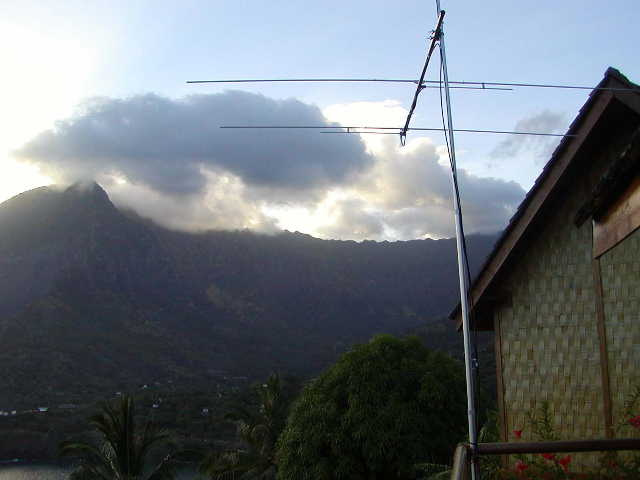

|
Flash ! DX 6m Today
|
Reportの読み方
[Back Issues Dec.2001]
TIME:UTC(JST-09:00)
Report from JA1RJU (PM95sq)
31.Dec.2001(15:00c)
V73SIX 22:25- 50.014 CW Beacon
V73AT 23:15- 50.110 CW
KL7IKV 00:03 50.103 CW
NL7Z 00:08 50.110/120 SSB
KL7NO 00:26 50.130 SSB
KL7Y 00:32 50.1360 SSB
KL7IKV 00:03 50.103 CW
HL1LTC 00:23 50.110 CW
NL7Z 00:08 50.110 SSB CQ HL
AL7PJ 00:58 50.108 CW
*9M-TV 02:30- 48.240/260 --
|
◎ 期待された2001年最後の北米大陸は、残念ながらお休み。KL7(Alaska)だけは、00:00z過ぎからFBにオープンした。
2002年春に期待。
|
30.Dec.2001(15:00d)
VE7AG 22:30 50.106 CW
KB7WW 22:33 50.100 CW
K7RAT 22:36 50.099 CW
VE7FG/B 22:37- 50.033 CW Beacon
VE7SL 22:38 50.098 CW
W7EJ 22:39 50.122 SSB
VE7CEU 22:42 50.125 SSB
KB7WW 22:42 50.160 SSB
W7EIR 22:43 50.163 SSB
W7HR 22:44 50.163 SSB
WX7R 22:44 50.170 SSB
KC7HKP 22:45 50.185 SSB
W7JWC 22:48 50.163 SSB
VE6BGT 22:49 50.155 SSB
VE6BCC 22:50 50.150 SSB
W7AL 22:52 50.136 SSB
VE6JW 22:53 50.130 SSB
NL7Z 22:54 50.130 SSB
K7RAT 22:56 50.099 CW CQ test
K7LJ 22:57 50.095 CW
VE6ARC/B 22:58- 50.044 CW Beacon
WB6FFC 23:03 50.147 SSB
VE6CX 23:04 50.155 SSB
K7LJ 23:05 50.155 SSB
VE6VLD 23:06 50.195 SSB
N7TGF 23:10 50.200 SSB
NN7J 23:12 50.105 CW
K7IEY 23:13 50.096 CW
N6AJ 23:15 50.090 CW
W7ZOI 23:16 50.086 CW
W7KWU 23:18 50.084 CW
K7CW 23:20 50.162 SSB
VE7SL 23:21 50.144 SSB
K6YM 23:21 50.089 CW
W7ZTT 23:23 50.115/135 SSB
VE7CT 23:32 50.079 CW
N7EPD 23:38 50.225 SSB
VE7VDX 23:47 50.140 SSB CQ test
K7CW 23:49 50.087 CW
VE7SL 00:00 50.144 SSB
W7ZTT 00:03 50.135 SSB
HL1LTC 00:23 50.110 CW
NL7Z 00:36 50.110 CW/SSB QSO with HL1LTC
KL7Y 01:30 50.104 CW
*9M-TV 02:30- 48.240/260 --
UN1SIX 03:05- 50.024 CW Beacon
(UA0SC 03:10 50.102 CW JR6 OO96TD)
|
◎ 昨日同様、早朝の北米大陸がFBにオープンした。今日のパスは約8,000Km付近の太平洋沿岸からカナダのVE6までで、
昨日のように北米大陸の中・南部までオープンする事は無かった。コンデションは何時もより早めの00:00z頃に急激に落ちてしまった。
|
29.Dec.2001(15:00d)
V73SIX 22:25- 50.014 CW Beacon
NN7J 22:36 50.103 CW
KB7WW 22:47 50.092 CW
W7EW 22:48 50.120 SSB
W7KKE 23:53 50.115 SSB
VE7XF 22:53 50.115 SSB
WX7R 22:55 50.150 SSB
NN7J 22:57 50.160 SSB
WA7GCS 23:03 50.115 SSB
VE7SL 23:06 50.138 SSB
K7YVZ 23:08 50.090 CW
K7CW 23:11 50.176 SSB
VE6TA 23:15 50.120 SSB DO33
VE7FG/B 23:15- 50.033 CW Beacon
VE7SL 23:17 50.103 CW CQ HL
VA6DX 23:18 50.115/153 SSB
WI7N 23:18 50.115 SSB
KM0A 23:20 50.143 SSB
KL9A 23:21 50.155 SSB
VE7SL 23:27 50.089 CW
KA7T 23:28 50.093 CW
W7NTF 23:30 50.156 SSB
W7EIR 23:31 50.156 SSB
NL7ZW 23:32 50.170 SSB
VE6BCC 23:33 50.180 SSB
VE6BGT 23:35 50.152 SSB
K0AZ 23:36 50.145 SSB EM37
KR0I 23:37 50.097 CW EM29
KG5MD 23:43 50.105 SSB EM36(Arkansas)
N4RFN 23:44 50.105 SSB EL87(Florida)
W5HUQ 23:49 50.100 CW EM35(Arkansas)
N7ET/DU7 23:49 50.101 CW CQ
9M6/JN3JBC 23:50 50.135 SSB
NX4E 23:55 50.133 SSB EM70(Florida)
W4SO 00:03 50.096 CW EL96(Florida)
K4RX 00:06 50.092 CW EM70(Florida)
KA0MR 00:15 50.110 SSB
K5AB 00:18 50.087/105 CW/SSB EM10(Texas)
9M6/JN3JBC 00:27 50.137 SSB
DU1EV 00:30 50.103 CW Worked W5
K5TN 00:30 50.103 CW EM15(Oklahoma)
WA5IYX 00:35 50.115 SSB EL09(Texas)
K5AB 00:36 50.115 SSB
K5NA 00:39 50.102 CW EM10(Texas)
N5AW 00:43 50.100 CW EM00(Texas)
◎ 昨日に引き続いて早朝の北米大陸がFBにオープンした。前半はGLがCN85-CN88付近の太平洋沿岸が主だった入感エリアは、
時間と共にW0の北米中部から、W4、5の南部までパスが伸びていった。
特に今まで北日本止まりだったW4(Florida)が、今日は1エリアでも良く聞こえていた。
伝搬は、どう言う訳？かJAの"Big Gun"からどパイルを受けていたアラスカのKL9Aが若干東側から聞こえていた以外は、正規ルートからのパス。
フロリダ半島の中央部のW4SO(EL96)は11,000Kmを超えるパスとなり、この先はC6(Bahamas)、CO(Cuba)などのカリブ海エリアとなるのだが、
残念ながらこのルートでのカリブとのQSOは"昔"から難しい。
今日のオープンではW5(Texas)が最後まで残っていたが、この時期の北米に対する伝搬はJA7、8、0の北日本が断然有利となっている。
|
28.Dec.2001(15:00d)
V73SIX 22:40- 50.014 CW Beacon
W1IPL/7 22:45 50.098 CW
*ZL-TV 23:00- 45.25/25/26--
*VK-TV 23:00- 46.172/240 --
N0VD 23:04 50.090 CW
M1MOD/9 23:17 50.093 CW EN40
VE5UF 23:20 50.098 CW
VE6BMX 23:22 50.089 CW
W0IR 23:23 50.084 CW
K9RS 23:23 50.092 CW
K0IKV 23:25 50.140 SSB
N0FW 23:27 50.164 SSB
W9RPM 23:30 50.175/180 SSB
(K4RX 23:30 50.115 SSB EM70 JA7)
(VE4AMU 23:30 50.170 SSB EN19 JA2.3.7)
K0GUB 23:35 50.127 SSB
W0PHD 23:38 50.108 CW
VE6JY 23:42 50.139 SSB
N0SRQ 23:44 50.135 SSB
|
◎ 年内は一段落したと思われた北米大陸のコンデションも、今朝は"復活"、約1時間に渡ってW7、8、9、0やカナダのVE4、5、6などがFBに入感した。
1エリア(PM95)では北米中部のW9、0が強く、同じ時間帯に聞こえていたカナダではVE5UFが強力だった。
北日本からはW4(EM40)、5とのQSOもリポートされている。
SSN、SFもここ2、3日急上昇しているが、期待されている西方向のコンデションは、中東が聞こえた22日以降は落ち込んだまま。
|
27.Dec.2001(15:00c)
V73SIX 22:40- 50.014 CW Beacon
*VK-TV 23:00- 46.240 --
KL7NO 00:13 50.110 CW
N7ET/DU7 00:23 50.102 CW
26.Dec.2001(15:00d)
V73SIX 22:40- 50.014 CW Beacon
N7ET/DU7 23:24 50.110 CW
N7ET/DU7 00:00 50.110/103 CW
DU1EV 00:37 50.107 CW
*ZL-TV 01:30- 45.25/25/26--
*VK-TV 01:30- 46.172/240 --
*9M-TV 02:30- 48.240/260 --
25.Dec.2001(15:00d)
V73SIX 22:30- 50.014 CW Beacon
*ZL-TV 22:50- 45.25/25/26--
*VK-TV 22:50- 46.172/240 --
ZL3SIX 23:25- 50.040 CW Beacon
N7ET/DU7 23:48 50.110/103 CW
GM4COK/MM 23:52 50.110/107 CW OJ89(Nr DU)
VK3DUT 23:55 50.110/130 SSB
VK3BQS 23:58 50.110/120 SSB
*9M-TV 00:00- 48.240/260 --
VK3PA 00:08 50.104 CW
VK7MO 00:10 50.120 SSB
GM4COK/MM 00:22 50.106 CW
HL1LTC 00:23 50.110 SSB
VR2XMT 00:29 50.117 SSB
24.Dec.2001(15:00d)
V73SIX 22:50- 50.014 CW Beacon
*ZL-TV 00:00- 45.25/25/26--
*VK-TV 00:00- 46.172/240 --
*9M-TV 00:00- 48.240 --
VK3SIX 00:40 50.105 CW
DU1EV 00:41 50.107 CW
DU9/N0NM 00:49 50.101 CW
Greeting of the season and all good wisshes for the coming year.
23.Dec.2001(15:00e)
V73SIX 22:20- 50.014 CW Beacon
XE1/G3SVD 23:07 50.110 SSB EK09
XE1AVD 23:14 50.105 CW
W1LP/MM 23:24 50.115 SSB DK88→DK78
XE1ZOI 23:30 50.105 CW
DU9/N0NM 23:44 50.102 CW
XE1/G3SVD 23:57 50.110 SSB
DU9/N0NM 00:00 50.102 CW
XE1/G3SVD 00:28 50.110 SSB
*ZL-TV 02:00- 45.25/25/26--
*VK-TV 02:00- 46.240 --
(UN1SIX- 03:53- 50.024.5 CW Beacon)
VK6RPH 06:35- 50.066 CW Beacon
9M2TO 10:55 50.222 CW
|
◎ 突然、50.110MHzのSSBで入感してきたXE1/G3SVDから、今朝のオープンが始まった。
Mexico City(EK09)のこの局は、入感当初は近海のMM局と間違えるほど信号は強力だった。
この後に聞こえてきたW1LP/MMは、Mexico沖の太平洋上を移動中の80feetのBoatからの運用。
|
22.Dec.2001(15:00f)
V73SIX 22:40- 50.014 CW Beacon
NN7J 23:14 50.110 CW
KB7WW 23:35 50.110 CW
DU9/N0NM 23:36 50.110/103 CW QSL via W4DR
DU9/N0NM 00:00 50.103 CW
VR2XMT 00:19 50.110 SSB
W7FI 00:24 50.098 CW
VE6PY 00:50 50.099 CW
N7RY 01:00 50.100 CW
HL1LTC 01:07 50.110 CW CQ-NA
VR2XMT 01:15 50.115 SSB
K6MYC 01:12 50.106 CW
*9M-TV 01:20- 48.240/260 --
*ZL-TV 01:20- 45.25/25/26--
*VK-TV 04:30- 46.172/240 --
V73SIX 05:30- 50.014 CW Beacon
5B4AGM 06:40 50.112 CW
JY9NX 06:45 50.180 SSB QSX 50.195
4X1IF 06:50 50.106/130 CW KM73
4Z4KX 06:56 50.105 CW
4Z5CX 07:04 50.103 CW
UT5JAJ 07:20 50.105 CW
|
◎ 午前中に弱い北米大陸方面がオープン。相変わらずNN7Jの"応答"は悪い。
午後(06:35z)頃からショートパスでJY9NX、5B4AGM、4X/4Z'sが強力に入感。特にJY9NX・田原さんのSSB信号は強力だった。
田原さんは今日のオープンでJAと89QSOしたと。
今日のオープンで西日本からUT5、LZ、SV8などのQSOもリポートされていたが、1エリア(PM95)ではほとんど聞こえない。
|
21.Dec.2001(15:00d)
V73SIX 22:30- 50.014 CW Beacon
NN7J 23:42 50.110 CW CQ
NN7J 00:00 50.110 CW CQ
*9M-TV 01:00- 48.240/260 --
VR2XMT 06:41 50.110/115 SSB
|
◎ 北米大陸方面のコンデションも"一段落"。昨日、今日と1エリアで確認出来たのはNN7J・Dan (Oregon州=CN85)とアラスカだけ。
今日のNN7Jは、ピークではRST599で良く聞こえているのに、JAからのパイルにほとんど応答しなかった。
Danは62feet高の11ele(M2=12.4 dbd)アンテナに、Icom 756pro+8877(1500 watts)で運用しているが、
今日はJA方向からのノイズが多く、3局QSO出来ただけだったと。
|
20.Dec.2001(15:00d)
V73SIX 22:20- 50.014 CW Beacon
NN7J 23:08 50.110 CW
N7ET/DU7 23:24 50.110 CW
DU1EV 23:44 50.110 CW
N7ET/DU7 23:46 50.110 CW
N7ET/DU7 00:00 50.110 CW
*VK-TV 00:00- 46.172 --
VK4FNQ 00:03 50.110 SSB
KL7NO 01:25 50.110 CW
*9M-TV 01:30- 48.240/260 --
9M2TO/B 02:15- 50.005 CW Beacon
9M2TO/B 08:00- 50.005 CW Beacon
(OH.ES.SP 08:40- 50.100+- CW 240deg Sc)
19.Dec.2001(15:00e)
V73SIX 22:30- 50.014 CW Beacon
N7ET/DU7 23:31 50.097/93 CW
W7KQU 23:31 50.097 CW
K6QXY 23:35 50.111 CW
KB7WW 00:08 50.090 CW
N7ET/DU7 00:35 50.110 CW
NN7J 01:29 50.110 CW
*9M-TV 01:30- 48.240/260 --
*ZL-TV 01:30- 45.25/25/26--
*VK-TV 02:00- 46.172/240 --
ZL3SIX 02:45- 50.040 CW Beacon
V73SIX 05:30- 50.014 CW Beacon
9M2TO/B 06:45- 50.005 CW Running 24h
18.Dec.2001(15:00e)
V73SIX 22:40- 50.014 CW Beacon
(K4RX 23:22 50.110 SSB Florida JA7.9.0)
K6QXY 23:40 50.106 CW
KI6CG 23:43 50.106 CW
DU1/GM4COK/mm 23:45 50.102 CW
W6JKV/5 23:49 50.110 SSB/CW
DU1EV 23:49 50.101 CW
*9M-TV 23:50- 48.240/260 --
N7ET/DU7 00:16 50.100 CW
XE1KK 00:16 50.110 SSB
XE1ZOI 00:17 50.110 SSB
VR2XMT 00:20 50.115 SSB
W6JKV/5 00:30 50.110 CW
*ZL-TV 02:30- 45.25/25/26--
*VK-TV 02:30- 46.172/240 --
V73SIX 04:50- 50.014 CW Beacon
N7ET/DU7 06:13 50.110 CW
N7ET/DU7 06:50 50.110 CW
17.Dec.2001(15:00e)
V73SIX 22:50- 50.014 CW Beacon
W3XO/5 23:26 50.108 CW EM00
N5WS 23:35 50.103 CW EL09
W5OZI 23:41 50.112 CW EM00
W3XO/5 23:46 50.125 SSB
DU1EV 23:55 50.097 CW
N5WS 23:57 50.097 CW
W5OZI 00:03 50.112 CW
DU1EV 00:05 50.097 CW CQ NA
N5WS 00:13 50.103 CW CQ
W5OZI 00:20 50.085 CW
W5DB 00:33 50.100 CW DM82
*9M-TV 02:00- 48.240/260 --
*VK-TV 03:30- 46.172 --
N7ET/DU7 05:35 50.110 CW
V73SIX 05:40- 50.014 CW Beacon
VK4NW 05:49 50.110 SSB
VK5RO 05:57 50.110 CW
VU2LO 08:55 50.110 CW
|
◎ 今日の北米はEL09、EM00、DM82などテキサス州、ニューメキシコ州など北米大陸南部だけの入感。
北米が入感する前に上昇してくる40.690MHzの"キャリア"も聞こえない狭い範囲のオープンだった。
|
16.Dec.2001(15:00e)
V73SIX 23:00- 50.014 CW Beacon
W7GJ 23:23 50.110 SSB
VE7KED 00:02 50.106 CW
K7CW 00:04 50.108 CW
VE7KED 00:07 50.100 SSB
W7KQU 00:08 50.094 CW
VE7SL 00:17 50.139 SSB
VE7QV 00:20 50.150 SSB
K7CW 00:28 50.160 SSB
(VE0ML 00:31 50.125 SSB JA7)
K7IEY 00:32 50.090 CW
K7CW 00:40 50.088 CW
K7MCX 00:41 50.130 SSB
K7GCO 00:45 50.135 SSB
W7AL 00:46 50.155 SSB
VE7SL 00:55 50.139 SSB
N7RY 00:56 50.100 CW
K7RAT 00:59 50.095 CW
KB7WW 01:04 50.085 CW
N7RY 01:20 50.100 CW
*ZL-TV 03:00- 45.25/25/26--
*VK-TV 03:00- 46.172/240 --
*9M-TV 06:00- 48.240/260 --
15.Dec.2001(15:00c)
V73SIX 23:00- 50.014 CW Beacon
WX7R 23:22 50.102 CW
NJ7A 23:25 50.100 CW
WX7R 23:27 50.090 CW
N7ET/DU7 23:29 50.110/095 CW
AA7A 23:30 50.102 CW
W7AL 23:36 50.134 SSB
K6LIG 23:47 50.134 SSB
W7NTF 23:57 50.100 CW
W7AL 00:02 50.138 SSB
K7MCX 00:05 50.168 SSB
W7VHW 00:16 50.150 SSB
DU1/GM4COK 00:20 50.106 CW
W7FI 00:25 50.106 CW
KL7XX 00:53 50.106 CW
14.Dec.2001(15:00d)
(W6.7/KL7 23:55- 50.110 CW JA7.8)
N7RY 00:34 50.100 CW
W7NTF 00:35 50.100 CW
NN7J 00:38 50.110 CW
KB7WW 00:42 50.092 CW
NN7J 00:44 50.170/105 SSB/CW
NN7J 01:15 50.110 CW CQ
KL7IKV 01:18 50.103 CW CQ
13.Dec.2001(15:00e)
K1MOD/9 22:46 50.088 CW
V73SIX 22:50- 50.014 CW Beacon
W0BJ 22:56 50.105 CW
K0ETC 23:00 50.098 CW
W7INX 23:04 50.156 SSB
K9HMB 23:04 50.156 SSB
W9RN 23:08 50.165 SSB
W7KV 23:09 50.150 SSB
K7MCX 23:15 50.160 SSB
W7RPT 23:16 50.117 SSB
NN7J 23:17 50.105/157 SSB
K7IEY 23:18 50.092 CW
K7IE 23:18 50.083 CW
W7WKR 23:20 50.070 CW
K6QUV 23:22 50.117 SSB
K7MV 23:22 50.117 SSB
K0FF 23:24 50.136 SSB
W7DMN 23:26 50.165 SSB
KI6CG 23:27 50.190 SSB
KD7HPL 23:31 50.179 SSB
W7INX 23:32 50.175 SSB
W7EIR 23:33 50.175 SSB
K7DZE 23:40 50.130 SSB
K7GCO 23:44 50.135 SSB
W7LNG 23:50 50.098 CW
K7YVZ 00:00 50.096 CW
W7WKR 00:02 50.105/100 CW
KB7WW 00:05 50.098 CW
WX7R 00:09 50.090 CW
N7ET/DU7 00:10 50.092 CW
NN7J 00:13 50.115 SSB
K7LJ 00:15 50.134 SSB
VE7VDX 00:16 50.150 SSB/CW
K7MCX 00:17 50.170 SSB
K8EYU/7 00:20 50.180 SSB
W7NTF 00:25 50.100 CW
W7FKI 00:26 50.095 CW
VE7QV 00:29 50.145 SSB
NL7L 00:34 50.101 CW
AA7CQ 00:35 50.110 SSB
K7GCO 00:37 50.135 SSB
VE7AG 00:38 50.117 CW
W7EGO 00:40 50.150 SSB
KB7WW 00:45 50.082 CW
K7LJ 00:47 50.133 SSB
K7OFT 00:48 50.145 SSB
N7RY 00:55 50.125 SSB
KC7HKP 00:56 50.125 SSB
NN7J 01:00 50.150 SSB
KB7WJL 01:10 50.140 SSB
*ZL-TV 03:00- 45.25/25/26--
*VK-TV 04:30- 46.172 --
◎ 昨日とは打って変わって早朝から北米大陸が大オープン。入感エリアもW9・イリノイ州(EN52)、W5・オクラホマ州(EM25)、
W4・テネシー州(EM55)など北米中東部付近までパスが伸びた。
オープン当初は東南東方面からのスキャッターで入感していた信号も、23:00z前にダイレクトのパスに変わった。
この秋のコンデションではなかなかW1、2、3など北米東海岸まではパスは伸びてくれない。
今朝22:45z頃に入感していたK1MODもQTHは"/9"のEN40(イリノイ州)だった。
|
12.Dec.2001(15:00e)
V73SIX 22:50- 50.014 CW Beacon
NN7J 23:52 50.102 CW
N7AU 00:18 50.133 SSB
KL7IKV 01:24 50.110 CW
KL7IKV 01:48 50.110 CW
*VK-TV 03:30- 46.172/240 --
VK2CHR 03:47 50.110/140 SSB
VK2TQP 04:03 50.110/135 SSB
VK2DN 04:25 50.110 CW
|
◎ 2日続いたVE/Wのオープンも、今日はひと休み。1エリアでは短時間W7/KL7が入感したが、地域性のあるオープンだった。
午後からVK2'sが入感。
|
11.Dec.2001(15:00e)
K7OFT 23:23 50.120 SSB
W7NTF 23:24 50.120 SSB
N7AU 23:28 50.143 SSB
W7AL 23:32 50.140 SSB
VE6BCC 23:33 50.145 SSB
W7NTF 23:37 50.100 CW
W7QC 23:39 50.089 CW
W7AL 23:40 50.200 SSB
N7ET/DU7 23:43 50.102/110 CW
VE6JW 23:46 50.120 SSB
K8EYU/7 23:47 50.132 SSB
VA6DX 23:49 50.150 SSB
NN7J 23:52 50.120 SSB
VE6NA 23:54 50.150 SSB
VE7XF 23:59 50.085 RTTY
VE6ARC/B 00:00- 50.044 CW Beacon
VE7FG/B 00:00- 50.033 CW Beacon
VA6DX 00:03 50.110 CW
VE6BMR 00:05 50.110 CW
K7RG 00:11 50.134 SSB
N7GYD 00:12 50.134 SSB
K7NQ 00:13 50.134 SSB
VE7QV 00:14 50.134 SSB
VE6AJQ 00:17 50.156 SSB
VE6ARC/B 00:30- 50.044 CW Beacon
K6QXY 00:40 50.088 CW
AA7A 00:42 50.088 CW
KB7WW 00:46 50.082 CW
VE7AG 01:08 50.106 SSB/CW no ja!
|
◎ 昨日同様のパターンでVE6/7、W6/7がオープン。VEは相変わらず強力に入感。VE7AGは01:00z頃からQRVしてきたが、
今日は何時も通り"no ja"だった。早い時間帯ならN7ET/DU7がVE6とQSOしていたのでコンデションは良かったのだが。
|
10.Dec.2001(15:00e)
VE6TA 23:23 50.100 CW
VE6CX 23:28 50.100 CW
W7XU 23:35 50.098 CW
VE7FG/B 23:43- 50.033 CW Beacon CO83
VE7SL 23:46 50.110/089 CW
VE6ARC/B 23:51- 50.0445 CW Beacon DO05
VE7AG 23:56 50.118 CW
K7IEY 23:57 50.092 CW
VE7ALL 23:58 50.125 SSB
VE7SL 00:07 50.137 SSB
W7AL 00:13 50.1410 SSB
VE7QV 00:15 50.143 SSB
VA7SS 00:16 50.146 SSB
WA7TZY 00:17 50.157 SSB
KC7GVU 00:17 50.153 SSB
VE7AG 00:17 50.165 SSB JA ok!
K7CW 00:22 50.132 SSB
W7NTF 00:24 50.120 SSB
|
◎ JA8、7など北日本から20分ほど遅れてVE6/7、W7が入感。1エリアでは00:00z前後のVE7が強力だった。
"no ja"のVE7AGが珍しくJA'sとQSO。
|
09.Dec.2001(15:00c)
(VE.KL.W7's 23:00- 50.110 CW/SSB JA7-0 & 1-3)
*9M-TV 06:00- 48.240/260 --
08.Dec.2001(03:00c)
*9M-TV 23:00- 48.240/260 --
N7ET/DU7 23:29 50.110/100 CW
(W7's 23:20-59 50.110 CW/SSB JA7-8.0 & 1/2)
N7ET/DU7 00:19 50.110/101 CW
NL7Z 01:30 50.135 SSB
KL7IKV 01:42 50.110 CW
07.Dec.2001(15:00d)
W1IPL/7 00:04 50.098 CW
W7KNT 00:07 50.110 SSB
KL7IKV 00:22 50.103 CW
*9M-TV 00:30- 48.240/260 --
*ZL-TV 01:00- 45.25/25/26--
*VK-TV 01:00- 46./172240 --
06.Dec.2001(15:00e)
V73SIX 22:40- 50.014 CW Beacon
N7ET/DU7 23:29 50.110 CW
(W7's 23:35- 50.110 SSB JA7-8)
N7IJ 23:57 50.110 SSB
N7ET/DU7 00:00 50.110 CW
KL7NO 00:53 50.110 CW/SSB
*ZL-TV 02:30- 45.25/25/26--
9V1GA 09:25 50.110 CW
YB5QZ 09:28 50.110 CW/SSB
◎ 今日の北米方面はJA8、7など北日本では入感していたものの、1エリアでは00:00z頃からKL7/ W7が短時間入感しただけ。
11月18日から11月27日に掛けてFBに入感していたHC8N(Cristobal Is,Galapagos)のQSOの模様が下記のサイトに紹介されている。
JAとのQSOの模様も長時間録音されていてQSOした局には楽しめる。ファイルが大きいのでダウンロードに時間が掛かるが、
パイルアップに参加する局には"お手本"となる録音。
HC8N 6m Operation-Nov 2001
|
05.Dec.2001(15:00e)
WA7TZY 22:45 50.125 SSB
WA6RGP 22:58 50.116 SSB
VE7CT 22:59 50.102 CW
W7YM 23:03 50.150 SSB
W7INX 23:03 50.164 SSB
KI7BP 23:08 50.170 SSB
W7KNT 23:08 50.165 SSB
VE7VDX 23:12 50.140 SSB
W7GRN 23:15 50.144 SSB
K0IP 23:16 50.144 SSB
K6QXY 23:17 50.125 SSB
W7WKR 23:19 50.118 SSB
VE7BBG 23:20 50.205 SSB
W7BL 23:24 50.180 SSB
KD7MJO 23:26 50.130 SSB
WB7WJL 23:27 50.160 SSB
K7OFT 23:27 50.225 SSB
W7ZTT 23:29 50.190 SSB
W7EW 23;29 50.155 SSB
K0IP 23:30 50.143 SSB
WA7HL 23:31 50.125 SSB
AA7CQ 23:33 50.105 SSB
VE7FG 23:34- 50.033 CW Beacon
VE7KED 23:36 50.165 SSB
VE7BBG 23:40 50.130/190 SSB
W7AV 23:43 50.148 SSB
W7ZTT 23:48 50.190 SSB
K7MCX 23:49 50.200 SSB
WA7TZY 23:50 50.221 SSB
NL7Z 23:58 50.098 CW
W7EW 00:00 50.157 SSB
K7OFT 00:03 50.180 SSB
VE7IHS 00:08 50.170 SSB
NL7Z 00:14 50.098 CW
NL7Z 00:38 50.098 CW CQing
*VK-TV 04:00- 46.172/240 --
VK3DUT 04:21 50.110/130 SSB
|
◎ 昨日に続き、北米大陸がFBにオープンした。入感エリアはKL7、VE7からW7の中北部とW6、0の一部で、とくにVE7/W7は強力だった。
W/VE局の中にはJA側のCQに応答するだけで、自らCQを出さない局もいて、
ワッチしているだけではなかなかQSOのチャンスに恵まれない局も多い。
◎ TG9AJRからのリポートによると、HC8Nが今回の運用中に6mでQSOした局数は次の通り。
HC8N final numbers on 6m:
3,011 QSO's. 51 Countries
231 QSO's in Zone 14
38 QSO's in Zone 15
1 QSO in Zone 16
970 QSO's in Zone 25(JA)
また、先(2001.26/Oct-04/Nov)に、K5AND.W7XU.W0SDらによって運用された9G5AN(Ghana)のトータルQSOは3,200、84countriesだったと。
これは今までDX-pediによる6mのQSO数の記録と言われていたTX0DXの2,500をはるかに超える新記録となった。
HC8Nは今後も運用を続けるので、最終的に4,000局を超える可能性はある。
HC8Nは"半常駐"の局なのでDX-pediとは言えないかもしれないが、9G5ANのQSO数は特筆出来る記録。JAとのオープンが"効いた"？。
|
04.Dec.2001(15:00d)
V73SIX 22:30- 50.014 CW Beacon
K7XD 23:05 50.130 SSB
W7WKR 23:06 50.110 SSB
K7IE 23:12 50.083 CW
W6QUV 23:15 50.090 CW
W7YOZ 23:20 50.160 SSB
W7NTF 23:21 50.110 CW
VE7VDX 23:33 50.140 SSB
WB7VLW 23:37 50.125 SSB
W7KNT 23:40 50.157 SSB
W7NTF 23:43 50.092 CW
NJ7A 23:46 50.095 CW
N7EA 23:51 50.104 SSB
K7OFT 23:51 50.104 SSB
WA7GCS 23:54 50.135 SSB
KB7WW 23:55 50.144 SSB
KI7KL 23:59 50.090 CW
N7IJ 00:01 50.105 SSB
W0SD 00:05 50.163 SSB
VE6PY 00:15 50.115 SSB
W7LR 00:21 50.087 CW
NL7Z 00:25 50.150 SSB
K0GU 00:32 50.104 CW
NL7Z 00:34 50.100 CW
*ZL-TV 03:00- 45.25/25/26--
*VK-TV 03:00- 46.240 --
*9M-TV 03:30- 48.240/260 --
◎ 昨日に続き、北米大陸がFBにオープンした。
今日のコンデションは久しぶりにJA8、7エリアなど北日本からオープンしてくる"まともな"パスだった。
クラスターに北米側から"JA bigオープン!"の入感リポートが上がった時点では、1エリアでは信号のカケラも聞こえなかった。
23:30z頃にはJA8とW7、０などの北米中部がオープンしていたらしいが、コンデションがJA7→JA1と徐々に南に移ってきて、
1エリアで本格的に聞こえ出したのは23:00zを過ぎてから。
入感エリアは北米西海岸からW0、VE6/7付近までで、目新しいところは無かったが、11月下旬のFBなオープンを思い出させる入感だった。
|
03.Dec.2001(15:00e)
V73SIX 22:25- 50.014 CW Beacon
W7GJ 22:59 50.110 SSB
VE6TA 23:38 50.099 CW
VA6SZ 23:55 50.135 CW
*ZL-TV 01:30- 45.25/25/26--
V73SIX 01:30- 50.014 CW Beacon
ZL3NW 03:46 50.110 SSB
*VK-TV 05:00- 46.172/240 --
*9M-TV 05:00- 48.240/260 --
VK6RPH 07:30- 50.066 CW Beacon
◎ 一週間ぶりに1エリアでも北米大陸が入感。この2、3日ヨーロッパ→北米東部、KL7→北米中東部がFBにオープンしていたので、
JAからの北米のパス"復活"が期待されていた。信号も弱く、入感時間も短いオープンだったが、まだ僅かながらチャンスは残っている。
JF1OCQ・三宅さんによるZL1WY/ ZL7(Chatham Is)は、HFでアクティブにQRVする傍ら、50.115MHzでBeaconを発射している。
昨日はZL3とのQSOやJAからの受信リポートも上がっている。運用は12月5日までの予定。
|
02.Dec.2001(15:00e)
VK3SIX 00:02 50.110 CW
*VK-TV 02:00- 46.172 --
*9M-TV 02:00- 48.240/260 --
VK3DUT 03:26 50.110 SSB
(ZL1WY/ZL7 06:37 50.115 CW Beacon JA2-4)
V73SIX 06:40- 50.014 CW Beacon
01.Dec.2001(15:00d)
*9M-TV 02:00- 48.240/260 --
*VK-TV 02:00- 46.172/240 --
*ZL-TV 02:00- 45.25/25/26-- weak
VK4ZSS 02:54 50.110 SSB
XV3AA 03:01 50.130 SSB
◎ コンデションが落ち込んだまま、早くも今日から12月。このまま北米/南米のコンデション終わってしまうとは思われないが、
11月のコンデションがあまりに"良過ぎた"ためか、この落差は大きい。
JF1OCQ・三宅さんによるZL1WY/ ZL7(Chatham Is)の運用が始まった。ZL本土が入感しているのでオープンの可能性は高い。
◎ FO0SAI・Marquesas Is運用記録
|

FO0・Marquesas Isから運用したJI1JKW/FO0SAI・斎藤裕之さん
写真はヒバオアロッジのもので、50MHzのアンテナはＪＡ方向を向いている。
アンテナは屋根にぶつかるため4eleのHB9CVを2eleにして突き出して建てた。
オペレートしている窓の方向は南南東、JA方向は高い山があり条件は悪い。
[斎藤裕之さんのリポートから]
結果からいうとマルケサスからは６ｍではＱＳＯできませんでした。
マルケサスからは現地時間で11月18日13:00時過ぎ頃からHFにQRV始めました。
翌日19日はTahuata島と言う隣りの島に昼間一日遊びに行っていましたので昼間は聞けませんでしたが、
この日以降は、JAの11:00時から13:00時ごろと15:00時から17:00時ごろまで50.110MHzで、
できるだけビーコンを出していました。
現地時間20日昼前(UTCで21:00時半頃)にZP5AAのビーコンが聞こえました。
その後50.110MHzでCWとSSBが弱くきこえたのでCQ出していたところなんとすぐに停電。
40分ほどで通電しましたが、その時はCWとSSBは聞こえずZP5AAのビーコンも弱くなっていました。
たまにダイヤル回して聞きながら50.110MHzでCQを出し続けたのですがＱＳＯできませんでした。
また翌日チェックアウトの日、６ｍのアンテナだけ最後まで残してビーコンを出していましたがどこも聞こえず、
現地時間の11月21日11:00時前にマルケサスでの運用を終了しました。(TNX JI1JKW)
|